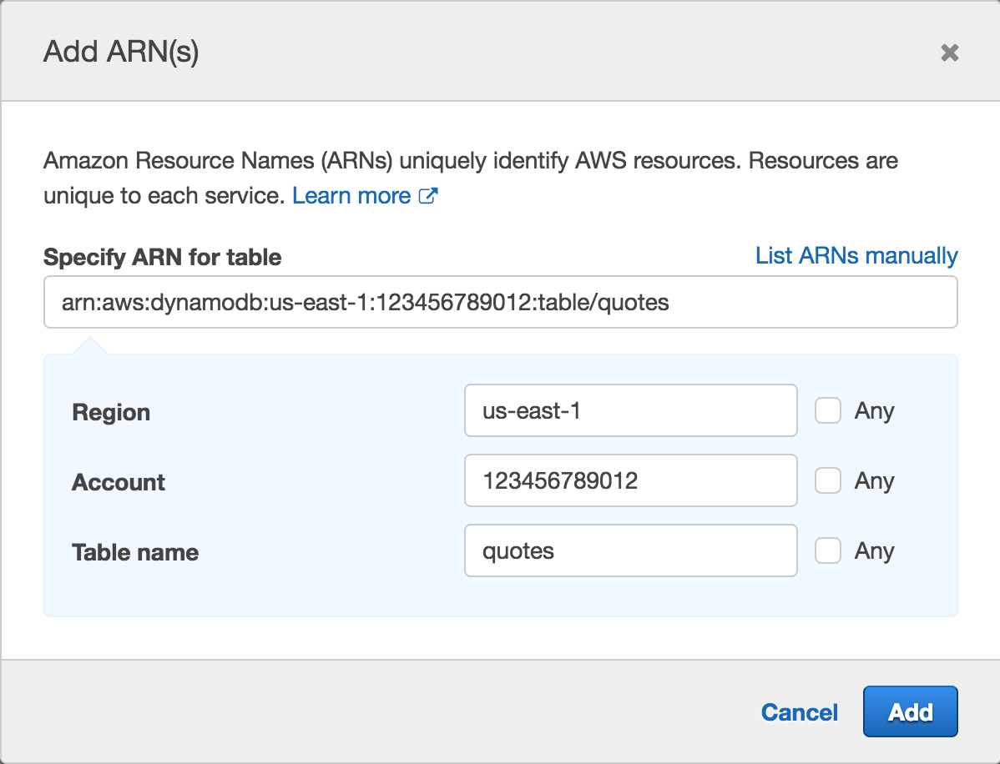
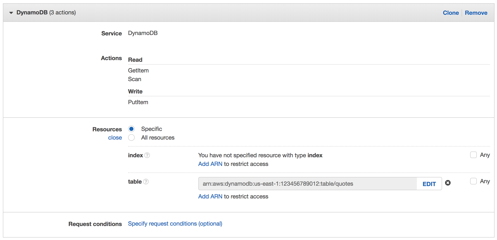

Running Containers on AWS Fargate
Create a Service
In this module we will create a new task definition and service to run the sample application we built in the previous module. To support this service, we'll need to create an AWS Identity and Access Management (AWS IAM) role to allow our application to read from and write to the Amazon DynamoDB table it uses to store quotations. We'll also need to create an Application Load Balancer to distribute traffic across the running tasks that are being ran by the service.
This module provides instructions for creating the service in both the AWS Management Console and the AWS Command Line Interface.
Implementation
1. Create the Task Role
Task roles are IAM roles that can be used by the containers in the task. For our application, we need to grant permission to read from and write to the Amazon DynamoDB table we created in the last module.
✅ Step-by-step Instructions (AWS Management Console)
Go to the AWS Management Console, click Services then select IAM under Security, Identity & Compliance.
Click on Roles in the left-hand navigation.
Click Create role.
First, we'll configure which AWS service can assume this role. Click Elastic Container Service from the Choose the service that will use this role list. Next, choose Elastic Container Service Task from Select your use case.
Click Next: Permissions.
Click Create policy. The visual policy editor will open in a new tab.
Click on Choose a service and click DynamoDB.
Expand the Read permissions and check the Scan and GetItem checkboxes.
Expand the Write permissions and check the PutItem checkbox.
Click Resources to limit the role to the quotes table.
Click Add ARN next to table.
Enter
us-east-1in Region, your Account ID in Account, andquotesin Table name.Click Add.
This will result in a policy allowing dynamodb:PutItem, dynamodb:Scan, and dyanmodb:GetItem.
{ "Version": "2012-10-17", "Statement": [ { "Effect": "Allow", "Action": [ "dynamodb:PutItem", "dynamodb:GetItem", "dynamodb:Scan" ], "Resource": "arn:aws:dynamodb:us-east-1:123456789012:table/quotes" } ] }Click Review policy.
Enter
WorkshopAppPolicyin Name.
Click Create policy.

Return to the original tab where you were creating the role. Click Refresh and type
WorkshopAppPolicyin the Filter textbox. Check the WorkshopAppPolicy* checkbox. Click Next: Review**.Enter
WorkshopAppRolein Role name.
Click Create role.
✅ Step-by-step Instructions (AWS CLI)
Switch to the tab where you have your Cloud9 environment opened.
Create a new IAM role called
WorkshopAppRoleby running this command in the Cloud9 terminal:aws iam create-role --role-name WorkshopAppRole --assume-role-policy-document file://iam/WorkshopAppAssumeRolePolicy.jsonThis creates a role and allows an ECS task to assume that role. Navigate to
fargate-workshop-app/iam/WorkshopAppAssumeRolePolicy.jsonto see the assume role policy document we're assigning to the new role.The command will return information about the newly created role:
Admin:~/environment/fargate-workshop-app (master) $ aws iam create-role --role-name WorkshopAppRole --assume-role-policy-document file://iam/WorkshopAppAssumeRolePolicy.json{ "Role": { "AssumeRolePolicyDocument": { "Version": "2012-10-17", "Statement": [ { "Action": "sts:AssumeRole", "Effect": "Allow", "Principal": { "Service": "ecs-tasks.amazonaws.com" } } ] }, "RoleId": "AROAJD4AD2SWV6AZAIVN4", "CreateDate": "2018-01-07T18:09:03.866Z", "RoleName": "WorkshopAppRole", "Path": "/", "Arn": "arn:aws:iam::123456789012:role/WorkshopAppRolet" } }Open the file
fargate-workshop-app/iam/WorkshopAppPolicy.jsonby navigating to it in the environment tree and double clicking the filename.The file has the following contents:
{ "Version": "2012-10-17", "Statement": [ { "Effect": "Allow", "Action": [ "dynamodb:PutItem", "dynamodb:GetItem", "dynamodb:Scan" ], "Resource": "arn:aws:dynamodb:us-east-1:YOUR_ACCOUNT_ID_HERE:table/quotes" } ] }Replace the YOUR_ACCOUNT_ID_HERE placeholder with your Account ID. Save the file by going to File and selecting Save in the menu bar, or pressing ⌘-S (macOS) / Ctrl-S (Windows).
Create the IAM policy by running this command in the Cloud9 terminal:
aws iam create-policy --role-name WorkshopAppPolicy --policy-document file://iam/WorkshopAppPolicy.jsonThe command will return details about the newly created policy:
Admin:~/environment/fargate-workshop-app (master) $ aws iam create-policy --role-name WorkshopAppPolicy --policy-document file://iam/WorkshopAppPolicy.json{ "Policy": { "PolicyName": "WorkshopAppPolicy", "CreateDate": "2018-01-07T18:12:00.829Z", "AttachmentCount": 0, "IsAttachable": true, "PolicyId": "ANPAIITP5ALYCNFCXUTDA", "DefaultVersionId": "v1", "Path": "/", "Arn": "arn:aws:iam::123456789012:policy/WorkshopAppPolicy", "UpdateDate": "2018-01-07T18:12:00.829Z" } }Note the policy's Arn above for use in the next step.
Attach the policy to the role by running this command in the Cloud9 terminal. You'll need to change the --policy-arn attribute to the **Arn value you noted in the previous step. For example, for the output above, we'd run:
aws iam attach-role-policy --role-name WorkshopAppRole --policy-arn arn:aws:iam::123456789012:policy/WorkshopAppPolicy